Process simulation of mineral carbonation of phosphogypsum with
ammonia under increased CO2
pressure
Weijun
Baoa,b, Hongtao
Zhaoa,c,d,
Huiquan Lia,b,d,*,
Songgeng Lic,d,*, Weigang Linc,d
a Key Laboratory of Green Process and Engineering, Institute of Process Engineering, Chinese Academy of Sciences, Beijing, 100080, PR China
b
National Engineering Laboratory for Hydrometallurgical Cleaner Production Technology, Institute of Process Engineering, Chinese Academy of Sciences,
Beijing, 100080, PR China
c State Key Laboratory of Multiphase Complex Systems, Institute of Process Engineering, Chinese Academy of Sciences, Beijing, 100080, PR China
d
|
Article
history:
|
|
|
Received 22
November 2015
Received in
revised form
23 October
2016
Accepted 30
November 2016
Available
online xxx
|
The mineral
carbonation of
phosphogypsum offers
many advantages
in sequestering
CO2, solving
the pollution problem
of phosphogypsum
stacking, and
manufacturing high
value-added chemical
products with low
energy consumption
and cost.
Using the
Aspen Plus
process simulation
software, this
work simulates a
novel process
for the
mineral carbonation
of phosphogypsum
with ammonia
under increased
CO
pressure. This process is divided into five
sections, namely, pre-carbonation, enhanced carbonation,
|
|
Keywords:
Carbon dioxide
Phosphogypsum
Ammonia
Mineral carbonation
Process
simulation
|
2
flash separation,
gas phase
absorption, and
(NH4)2SO4 fertilizer
production. With
its large-scale
application, this new
process allows
the sensitivity
analysis of
many operation
conditions, identifies
the optimal conditions
for reducing
the ammonia
and energy
consumption of
(NH4)2SO4 fertilizer
production, and achieves
a high carbonation
conversion with
a fast reaction
rate. The
optimal conditions
(6 bar enhanced
carbonation pressure,
1 bar flash
pressure, 38 C
ammonia absorption
solution
|
|
|
temperature, 1.05
ammonia excess
ratio, 1.024
CO2 excess ratio,
and 0.94
mass ratio
of water
to gypsum) yield
the highest
carbonation conversion,
ammonia utilization
ratio, and
enhanced carbonation
temperature of 99.9%,
95.2%, and
138.5 C, respectively,
all of
which can
help achieve
a fast carbonation
reaction rate.
©
2016 Elsevier
Ltd. All
rights reserved.
|
University of Chinese Academy of Sciences, Beijing 100049, PR China
|
A
R T I
C L E
|
I
N F O
|
A
B S T
R A C
T
|
1. Introduction
Climate change has been widely attributed to global warming, which in turn is driven by increasing CO2 emissions [35]. These emissions must be reduced by 50%�C60% by 2050 to maintain the CO2 level in the atmosphere below 550 ppm
[31]. As a promising approach for CO2 sequestration, mineral carbonation technology (MCT) captures CO2 in its mineral form by the reaction of this element with alkaline materials, including calcium and magnesium-rich oxides and silicates, to form environmental friendly solid carbonate products [16,22,28]. Sequestering CO2 in solid carbonate can improve thermodynamic stability and permanence without leading to long-time environmental monitoring commitments [15,20]. MCT also has a large potential in sequestering CO2 minerals. Natural minerals and industrial solid residuals can be used as raw materials for CO2 mineral carbonation [12,30,5]. Solid
|
*
Corresponding authors
at: Institute
of Process
Engineering, Chinese
Academy of
Sciences, Beijing, 100080,
PR China.
E-mail addresses: hqli@ipe.ac.cn (H.
Li), sgli@ipe.ac.cn (S.
Li).
http://dx.doi.org/10.1016/j.jcou.2016.11.012
2212-9820/©
2016 Elsevier
Ltd. All
rights reserved.
|
waste also offers many advantages, such as high reactivity, fast
reaction rate, and CO2 in-situ xation with low transportation cost fi
or energy consumption [39,10,36].
Phosphogypsum is a main byproduct of the acid treatment of phosphate rocks in the phosphate fertilizer industry [27]. China produces 50 Mt of phosphogypsum every year, and more than 500 Mt of this material are being collected in storage ponds [38]. However, this solid waste only has an average utilization of less than 10% worldwide because of its high water content and impurity [23]. Therefore, the large-scale applications of phosphogypsum must be investigated. Phosphogypsum usually takes the
formmately of90 calcium% purity sulfateand 30 %dihydrateCaO, thereby (CaSOenhancing42H2O) itswithpotential approxi-for
CO2
sequestration [40]. The mineral carbonation of phosphogypsum for CO2 sequestration can solve two environmental problems simultaneously (the pollution problem of phosphogypsum stacking and the greenhouse effect of CO2 emissions) and allow the manufacturing of high value-added chemical products with low energy expenditure and cost.
Using waste gypsum as a raw material for CO2 mineral
sequestration has recently become a hot research topic. Many laboratory experiments have been conducted to check the feasibility of the mineral carbonation of flue gas desulfurization gypsum [17,32�C34,9], red gypsum [26,2�C4,24], and phosphogypsum [7,8,19,41] for CO2 sequestration and pure calcium carbonate production. Around 95% of phosphogypsum carbonation conversion requires a reaction time of more than 1 h under atmospheric conditions. To improve the reaction speed and conversion of phosphogypsum, we performed an experimental study in our laboratory and found that more than 97% of phosphogypsum
carbonation conversion can be achieved within 5 min under increased CO2 pressure conditions [41]. The main reaction for the mineral carbonation of phosphogypsum with ammonia can be expressed as follows:
CaSOH 42H2O(s) + CO2(g) + 2NH3(g) ! CaCO3(s) + (NH4)2SO4(aq) +(1)
2O(l)
However, under the same conditions, the ammonia may react with CO2 to form ammonium (bi)carbonate [11,14,18], and the formed ammonium (bi)carbonate in an ammonium sulfate solution must be neutralized by sulfuric acid prior evaporation and crystallization [38]. In this case, (NH4)2SO4 fertilizer production consumes a large amount of ammonia, thereby reducing the economic benefits of the entire carbonation process. Given that ammonium (bi)carbonate is usually unstable under high temperature and relatively low pressure conditions, this material can be decomposed into ammonia and CO2 gas via ash operation. fl
Accordingly, the consumption of ammonia will be reduced with the released ammonia, and CO2 gas is absorbed and recycled for the mineral carbonation of phosphogypsum.
Considering the large-scale application of this pressured phosphogypsum carbonation technology, this study uses the Aspen Plus process simulation software to simulate a novel process for the mineral carbonation of phosphogypsum. This process allows the sensitivity analysis of many operation conditions, identifies the optimal conditions for lowering the ammonia and energy consumption of (NH4)2SO4
fertilizer production, and achieves a high carbonation conversion with a fast reaction rate.
2. Model description
Fig. 1 presents the flowchart of the entire mineral carbonation process of phosphogypsum with ammonia under increased CO2 pressure. The process is divided into five sections, namely, precarbonation, enhanced carbonation, flash separation, gas phase absorption, and (NH4)2SO4
fertilizer production. The mineralization reaction begins with pre-carbonation, which involves the mixing of ammonia-absorbed solution with phosphogypsum to form a slurry. The formed phosphogypsum slurry then reacts with pressured CO2 in the enhanced carbonation section to form calcium carbonate, ammonium sulfate, and ammonium (bi) carbonate. The flash separation section decomposes the ammonium (bi)carbonate into ammonia and CO2 gas. The separated ammonia and CO2 gas are absorbed by the diluted ammonia solution in the gas phase absorption section and are further recycled in the pre-carbonation section. The remaining liquid and solid mixture is filtered to obtain calcium carbonate and ammonium sulfate liquor, with the latter being neutralized using sulfuric acid and then treated by evaporation and crystallization for (NH4)2SO4
fertilizer production.
The above flowchart is developed using the Aspen Plus process simulation software. Given that (NH4)2SO4 fertilizer production, which involves filtration, neutralization, evaporation, and crystallization, usually operates at normal conditions, this section is not considered in this study. Models of the system are then built. These models include a mixer block for modeling the pre-carbonation section; an RGibbs reactor block based on Gibbs free energy minimization for modeling the enhanced carbonation section; a two-outlet flash block for modeling the flash separation section; and a combination of the RGibbs reactor block, a two-outlet flash block, and a heat exchange block for modeling the gas phase absorption section. Fig. 2 shows the simulation process in the Aspen Plus environment. Given that phosphogypsum carbonation with ammonia is strongly exothermic as shown in Eq. (1), all blocks are operated under adiabatic conditions except for the heat exchange block. Given that some blocks for the pre-carbonation and gas phase absorption sections are usually operated under atmospheric conditions, the operated pressure for these sections is set to 1 bar. Tables 1 and 2 show the simulated parameters.
The physicochemical properties of the pure components and mixture are calculated, and the phase-equilibrium parameters are obtained from the Aspen Plus property database. Given the nonideal behavior of the CaSOproperty42H2O-NHmethod3�CCO2�CisHused2O electrolyteto
predict
system, the electrolyte�CNRTL
the activity coefficients, enthalpies, and Gibbs energies for liquid phase thermodynamic behavior [42,37,1]. The Redlich�CKwong equation of state calculates the fugacity coefficients for the vapor phase properties based on the recommendations of Qi et al.
[25].
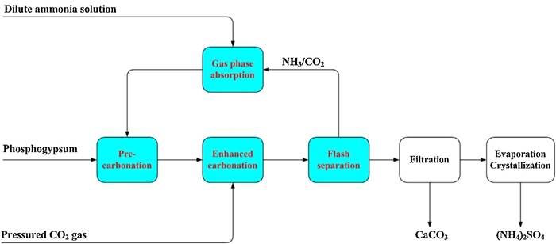
Fig. 1. Flowchart of the
mineral carbonation of phosphogypsum with ammonia under
increased CO2 pressure.
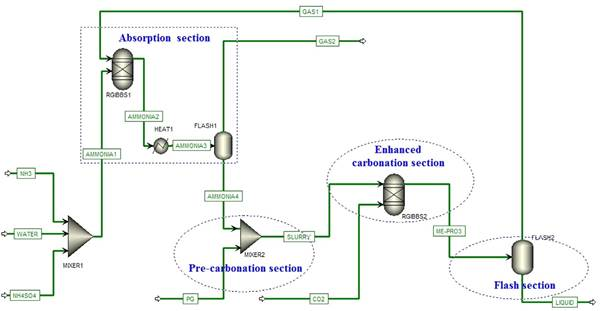
Fig. 2. Flowchart of the pressured phosphogypsum carbonation process modeled in Aspen Plus.
Table 1
Outline of the simulated parameters for various blocks.
|
Sections
|
Blocks
|
Temperature,
C
|
Pressure, bar
|
Optimal conditions
|
|
Pre-carbonation
section
|
MIXER2
|
�C
|
1
|
1 bar
|
|
Enhanced carbonation
section
|
RGIBBS2
|
�C
|
1�C12
|
6 bar
|
|
Flash separation
section
Gas phase
absorption section
|
FLASH2
RGIBBS1
|
�C
�C
|
0.66
1
|
1 bar
1 bar
|
|
|
HEAT1
|
20�C68
|
1
|
38C
|
|
|
F
|
LASH1
|
�C
|
|
1
|
1 bar
|
|
Other section
|
|
MIXER1
|
�C
|
|
1
|
1 bar
|
|
Table 2
Outline of
the simulated
parameters for
various stre
|
|
ams.
|
|
|
|
|
|
Streams
|
Composition
|
Temperature,
C
|
Pressure,
bar
|
Mass
flow, kg/h
|
Optimal
conditions, kg/h
|
|
PG
NH3
|
CaSO42H2O
NH3
|
25
25
|
1
1
|
400
75.12�C113
|
400 83.02
|
|
CO2
|
CO2
|
25
|
13
|
94.14�C112.56
|
104.74
|
|
WATER
|
H2O
|
25
|
1
|
300�C728
|
375
|
|
|
|
|
|
|
|
|
Given its thermal instability under high temperature conditions, the formation of the carbamate intermediate is ignored in this process simulation [21,29].
Four evaluation indexes including pre-carbonation conversion
(XPre-carbonation), enhanced carbonation conversion (XEnhanced-carbonation), total carbonation conversion (XTotal-carbonation), and ammonia utilization ratio (XAmmonia-utilization) are calculated to analyze the influence of the operation conditions. These indexes are calculated as follows:
XPrecarbonation ¼ mmCaCOCaSO3ðPre42Hcarbonation2OðInitialÞ Þ 172100 100%; ð2Þ
mCaCO3 ðEnhancedcarbonationÞ mCaCO3 ðPrecarbonationÞ
XEnhancedcarbonation ¼ mCaSO42H2Oð InitialÞ
100%; ð3Þ
mCaCO3 ðFlashÞ 172
XTotalcarbonation ¼ mCaSO42H2OðInitialÞ 100 100%; ð4Þ XAmmoniautilization ¼ mSO24ðFlashÞ 2 17 100%; ð5Þ mNH3ðInitialÞ 96
where mCaCO3(Pre-carbonation), mCaCO3(Enhanced-carbonation), and mCaCO3 (Flash) denote the mass flows of calcium carbonate produced in the pre-carbonation, enhanced carbonation, and flash separation
sections, respectively, kg/h; mCaSO42H2O(Initial)
and mNH3(Initial)
denote the mass flows of CaSO 42H2O and ammonia initially included in the process, kg/h; mSO42 (Flash)
denotes the mass flow of the sulfate ions produced after the flash separation section; and 172, 100, 96, and 17 are the relative molecular masses of CaSO42H2O, CaCO3, sulfate ions, and ammonia, respectively, g/ mol. The three carbonation indexes display the highest available carbonation conversion in each section or in the entire process, while the ammonia utilization ratio denotes the efficiency of ammonia used for phosphogypsum carbonation.
In our previous experimental investigation, the system temperature increases until the carbonation conversion reaches its highest value
[41]. This finding suggests that a high temperature corresponds to a fast carbonation rate. Given that the carbonation can be enhanced under increased pressure, and the enhanced carbonation section operated at increased pressure while the precarbonation section operated under atmospheric conditions, the high temperature achieved for the enhanced carbonation section is calculated. To reduce the energy consumption for (NH4)2SO4 fertilizer production, the ammonium sulfate concentration obtained after the flash separation section is neutralized with sulfuric acid, calculated, and analyzed in detail for the pressured phosphogypsum carbonation process.
3. Results and discussion
The sensitivities of six operation conditions including enhanced carbonation pressure, flash pressure, ammonia absorption solution temperature, ammonia excess ratio, CO2 excess ratio, and mass ratio of water to phosphogypsum are analyzed for the pressured phosphogypsum carbonation process. The ammonia and CO2 excess ratios refer to the mass ratio of the initial inputted ammonia and CO2 to the theoretical demand for phosphogypsum converted into calcium carbonate.
3.1. Influence of enhanced carbonation pressure
Before studying the other operation conditions, the influence of enhanced carbonation pressure is evaluated by increasing the pressure of the RGibbs reactor block in the enhanced carbonation section from 1 bar to 12 bar.
Fig.
3 shows that total carbonation conversion, enhanced carbonation conversion, pre-carbonation
conversion, ammonia utilization ratio, and ammonium sulfate concentration remains constant along with increasing enhanced carbonation pressure. Meanwhile, enhanced carbonation temperature gradually increases and then rapidly increases to its highest value of 138.5 C at an enhanced carbonation pressure of 6 bar before becoming constant. The total carbonation, enhanced carbonation, and pre-carbonation conversions are calculated as 99.9%, 81.1%, and 18.8%, respectively. The enhanced carbonation conversion is four times larger than pre-carbonation conversion, the enhanced carbonation conversion added with pre-carbonation conversion is equal to total carbonation conversion, and the ammonium sulfate concentration is slightly changed with a maximum theoretical value of 43.6 wt%. Therefore, it can be concluded that the enhanced carbonation section plays the key role in the pressured phosphogypsum carbonation process, and enhanced carbonation pressure significantly improves enhanced carbonation temperature with a fast reaction rate.
Fig. 4 shows that enhanced carbonation temperature varies
with enhanced carbonation pressure at different CO2 excess ratios.
Along with increasing enhanced carbonation pressure, the enhanced carbonation temperature gradually increases when the CO2 excess ratio is below 1.0 and above 1.05. At each enhanced carbonation pressure condition, the enhanced carbonation temperature increases when the CO2 excess ratio is below 1.0, but decreases when the CO2 excess ratio is above 1.05. When the CO2 excess ratio ranges between 1.01 and 1.035, the enhanced carbonation temperature rapidly increases to its highest value at a certain enhanced carbonation pressure, and then remains constant with increasing enhanced carbonation pressure. To obtain the highest enhanced carbonation temperature, the minimum permissible enhanced carbonation pressures are calculated as 7, 6, and 6.4 bar when the CO2 excess ratios are 1.01, 1.024, and 1.035, respectively. Despite improving the enhanced carbonation temperature, the high enhanced carbonation pressure may increase the compression energy consumption and reactor manufacturing cost. Therefore, similar to the enhanced carbonation pressure for the following simulations, the optimal enhanced carbonation pressure for the pressured phosphogypsum carbonation process is set to 6 bar.
3.2. Influence of flash pressure
When the phosphogypsum carbonation process operates under an increased CO2 pressure of 6 bar, the formed ammonium (bi) carbonate will be decomposed into ammonia and CO2 gas as the pressure decreases after the enhanced carbonation section. Some of the dissolved ammonia and CO2 gas will be self-separated from the formed ammonium sulfate liquor under high temperature conditions. As more formed ammonium (bi)carbonates and dissolved ammonia separate from the ammonium sulfate liquor and then absorb and recycle for phosphogypsum carbonation, the dosage of sulfuric acid used for the neutralization will be reduced and the ammonia utilization efficiency will be improved. The effect of flash pressure on this pressured phosphogypsum carbonation process is evaluated by increasing the pressure of the two-outlet flash block in the flash separation section from 0.6 bar to 6 bar.
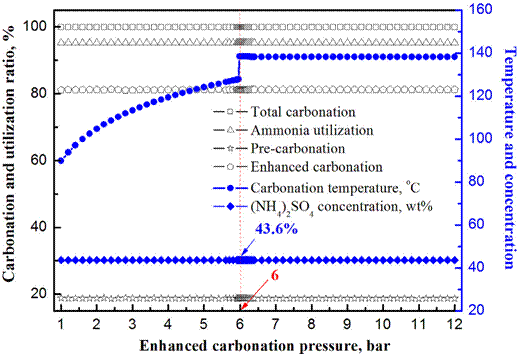
Fig. 3. Effect of enhanced carbonation pressure
on the pressured phosphogypsum carbonation process with ammonia
and CO2 excess ratios of 1.05 and 1.024, respectively.
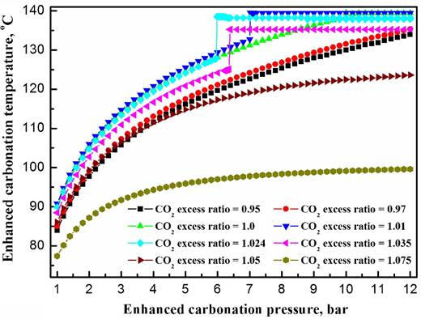
Fig. 4. Effect of enhanced carbonation pressure on enhanced carbonation temperature with an ammonia excess ratio of 1.05 and different CO2
excess ratios.
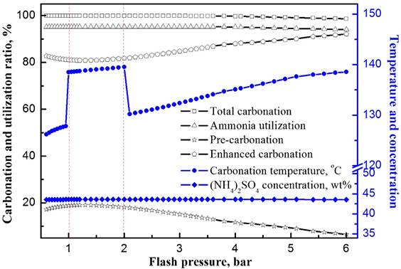
Fig. 5. Effect of flash pressure on the pressured phosphogypsum carbonation process with ammonia and CO2
excess ratios of 1.05 and 1.024, respectively.
Fig. 5 shows that total carbonation conversion and ammonia utilization ratio remain constant when the flash pressure increases to 3.8 bar, but slightly decrease when the flash pressure further increases. Meanwhile, the ammonium sulfate concentration remains constant with a maximum theoretical value of 43.6 wt %. This finding suggests that the remaining ammonium (bi) carbonate and dissolved ammonia in the ammonium sulfate liquor both increase when the flash pressure exceeds 3.8 bar, thereby decreasing the ammonia utilization ratio and total carbonation conversion. The enhanced carbonation conversion slowly decreases to its lowest value at a flash pressure of 1.3 bar and then gradually increases with flash pressure, while the precarbonation conversion demonstrates the opposite trend. The enhanced carbonation conversion is much higher than precarbonation conversion at each flash pressure condition. This result further emphasizes the importance of enhanced carbonation section in the pressured phosphogypsum carbonation process. The enhanced carbonation temperature gradually increases when the flash pressure is below 1 bar, rapidly increases to a much higher value when the flash pressure is increased from 1 bar to 2 bar, suddenly decreases to a much lower value when the flash pressure exceeds 2 bar, and gradually increases along with a further increase in flash pressure. It may therefore be concluded that the flash pressure slightly affects both the carbonation conversion and the ammonia utilization ratio, but significantly affects the enhanced carbonation reaction rate.
Fig. 6 shows that the ammonia utilization ratio and enhanced carbonation temperature vary with flash pressure
at different CO2
|
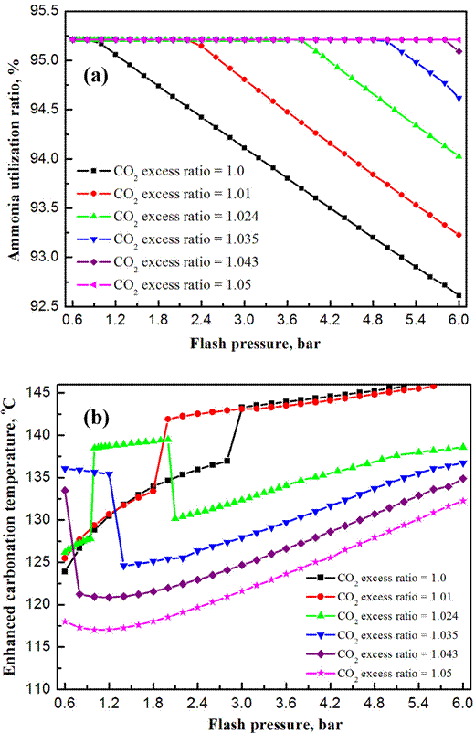
Fig.
6. Effect of
flash pressure
on ammonia
utilization ratio
and enhanced
carbonation temperature
with an
ammonia excess
ratio of
1.05 and
different CO2 excess
ratios: (a)
|
ammonia utilization ratio, (b) enhanced carbonation temperature.
excess ratio conditions. Fig. 6(a) shows that, when the CO2 excess ratio reaches as high as 1.05, the ammonia utilization ratio slightly changes with increasing flash pressure; by contrast, when the CO2 excess ratio is below 1.05, the ammonia utilization ratio linearly decreases as the flash pressure exceeds a certain value. The maximum permissible flash pressures for obtaining the highest ammonia utilization ratio are calculated as 0.8, 2.2, 3.8, 4.8, and 5.8 bar with CO2 excess ratios of 1.0, 1.01, 1.024, 1.035, and 1.043, respectively. Fig. 6(b) shows that the enhanced carbonation temperature significantly fluctuates when the flash pressure
increases at different CO2 excess ratios. Speci cally, when the fi
CO2 excess ratio reaches as high as 1.05, the enhanced carbonation temperature gradually decreases to its lowest value and then gradually increases with flash pressure. On the contrary, when the CO2 excess ratio is lower than 1.05, the enhanced carbonation
temperature suddenly changes with flash pressure. When the CO2 excess ratio is increased from 1.0 to 1.024, the enhanced carbonation temperature suddenly increases at flash pressures
of 3, 2, and 1 bar with CO2 excess ratios of 1.0, 1.01, and 1.024, respectively. However, when the CO2 excess ratio is increased from 1.024 to 1.043, the enhanced carbonation temperature suddenly decreases at flash pressures of 2, 1.2, and 0.6 bar with CO2 excess ratios of 1.024, 1.035, and 1.043, respectively. Figs. 6(a) and (b) suggest that, to obtain high ammonia utilization ratio and enhanced carbonation temperature, the permissible flash pressure must be decreased from 2.0 bar to 0.6 bar as the CO2 excess ratio
increases from 1.01 to 1.043. After considering the present industry operations, the optimal flash pressure for the pressured phosphogypsum carbonation process is set to 1 bar to obtain the highest ammonia utilization ratio, enhanced carbonation temperature, and carbonation conversion.
3.3. Influence of ammonia absorption solution temperature
To improve the ammonia recovery and utilization efficiency, the ammonia and CO2 gas separated after the ash separation section fl
are absorbed by the diluted ammonia solution in the gas phase absorption section. Given the strongly exothermic reaction between ammonia and CO2, a heat exchange block is used in the gas phase absorption section to recover the reaction heat. A high temperature results in high ammonia volatilization losses,
while a low temperature results in high reaction heat recovery and reduces carbonation temperature with a slow reaction rate. Therefore, the temperature of the ammonia absorption solution after using the heat exchange block must be maintained at its optimal value. The effect of ammonia absorption solution temperature on the pressured phosphogypsum carbonation process is evaluated by increasing the temperature of the heat exchange block in the gas phase absorption section from 20 C to 68 C.
Fig. 7 shows that total carbonation conversion, ammonia utilization ratio, and ammonium sulfate concentration remain constant when the ammonia absorption solution temperature is below 46 C, slowly decrease when the temperature is increased to 63 C, and continues to decrease with a further increase in the temperature. The ammonia utilization ratio and total carbonation conversion significantly decreases when the ammonia absorption solution temperature exceeds 63 C. This finding suggests that increasing the ammonia absorption solution temperature will
increase the ammonia volatilization loss. The enhanced carbonation conversion gradually decreases with increasing ammonia absorption solution temperature, significantly decreases when the temperature exceeds 46 C, and decreases to its lowest value when the temperature reaches 63 C. By contrast, the pre-carbonation conversion reaches its highest value at an ammonia absorption solution temperature of 63 C. The enhanced carbonation conversion is much higher than pre-carbonation conversion when the temperature is below 46 C, and vice versa. Interestingly, the
enhanced carbonation temperature initially increases with ammonia absorption solution temperature, and then suddenly decreases when the ammonia absorption solution temperature exceeds 38 C. Such decrease is followed by a gradual increase and a significant decrease when the ammonia absorption solution temperature exceeds 46 C. An ammonia absorption solution temperature higher than 46 C is significantly disadvantageous to a pressured phosphogypsum carbonation process when the enhanced carbonation temperature and enhanced carbonation conversion do not reach their highest values. Therefore, to obtain the highest enhanced carbonation temperature with a fast carbonation rate, the optimal ammonia absorption solution temperature for the pressured phosphogypsum carbonation process is set to 38 C.
3.4. Influence of ammonia excess ratio
The ammonia used for the pressured phosphogypsum carbonation process improves the CO2 absorption and adjusts the system pH for calcium carbonate precipitation. Theoretically, two moles of ammonia are consumed for one mole of gypsum that is completely converted into calcium carbonate according to Eq. (1). If ammonium (bi)carbonate and dissolved ammonia are formed in an aqueous solution under increased CO2 pressure conditions, then more ammonia are required for CO2 mineral carbonation with phosphogypsum. The effect of ammonia excess ratio on this pressured phosphogypsum carbonation process is evaluated by increasing the mass flow of initial inputted ammonia with ammonia excess ratio from 0.95 to 1.43.
Fig. 8(a) shows that total carbonation conversion, pre-carbonation conversion, and ammonia utilization ratio increase along with the ammonia excess ratio. Specifically, the pre-carbonation conversion and ammonia utilization ratio reach their highest values of 99.1% and 98.8% when the ammonia excess ratio reaches 1.008. A further increase in ammonia excess ratio slightly increases the total carbonation conversion and significantly decreases the ammonia utilization ratio. An enhanced carbonation conversion of lower than 0 is recorded when the ammonia excess ratio is below
1.008. That carbonation conversion increases to its highest value of
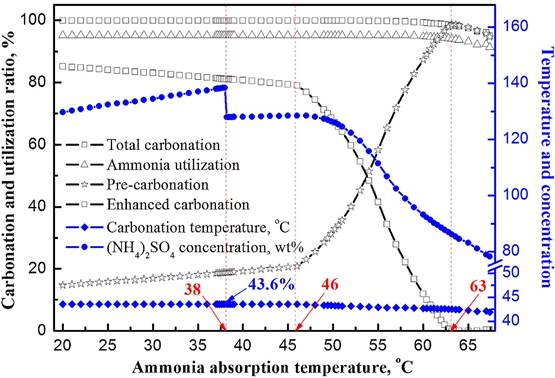
Fig. 7. Effect of ammonia absorption solution temperature on the pressured phosphogypsum carbonation process with ammonia
and CO2 excess ratios
of 1.05 and 1.024,
respectively.
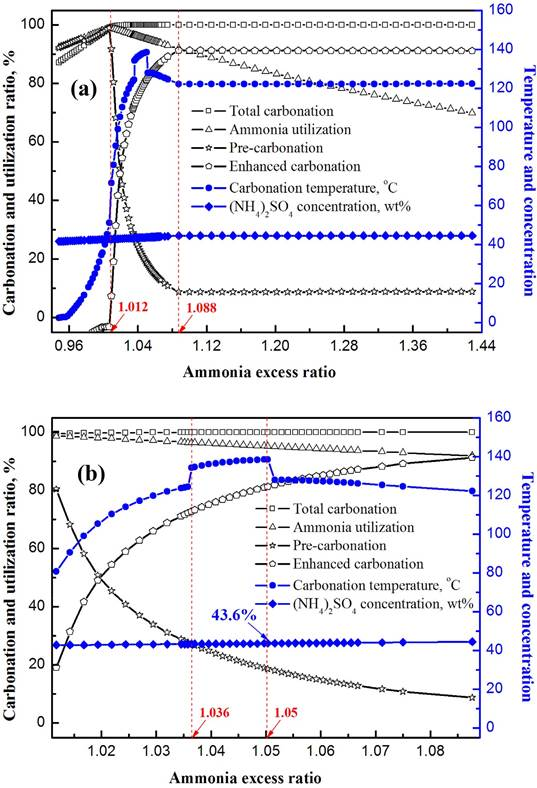
Fig. 8. Effect of ammonia excess ratio on the pressured phosphogypsum carbonation process with a CO2
excess ratio of 1.024: (a) full view, (b) magni ed view.
fi
91.3% at an ammonia excess ratio of 1.088, and then remains constant with a further increase in the ammonia excess ratio. By contrast, the pre-carbonation conversion significantly decreases to its lowest value of 8.7% at an ammonia excess ratio of 1.088, and then remains constant with a further increase in the ammonia excess ratio. Therefore, although a low ammonia excess ratio of 1.008 can result in the highest ammonia utilization ratio, this amount will negatively affect the pressured phosphogypsum carbonation process by increasing the pre-carbonation conversion to its highest level and decreasing the enhanced carbonation conversion to its lowest level. The ammonium sulfate concentration slightly increases when the ammonia excess ratio exceeds 1.088, while the ammonia utilization ratio significantly decreases, which indicates using more ammonia will lead to volatilization losses when the ammonia excess ratio exceeds 1.088. Those results are shown in
Fig.
9. Herein, the ammonia volatilization loss ratio refers to the mass ratio of volatilized ammonia in the gas phase absorption section to the initial inputted ammonium.
Fig. 8 also shows the variations in enhanced carbonation temperature along with ammonia excess ratio. As shown in Fig. 8(b), the enhanced carbonation temperature significantly increases with ammonia excess ratio, suddenly increases to a high value at an ammonia excess ratio of 1.036, and reaches its highest value at an ammonia excess ratio of 1.05. Afterward, the enhanced carbonation temperature rapidly decreases to a low value, gradually decreases as the ammonia excess ratio is increased to 1.088, and then remains constant when the ammonia excess ratio exceeds 1.088. It can be also observed that when the ammonia excess ratio is increased from 1.036 to 1.05, the enhanced carbonation conversion increases from 72.5% to 81.1%, while the pre-carbonation conversion decreases from 27.4% to 18.8%. Therefore, an ammonia excess ratio of 1.036 to 1.05 can result in
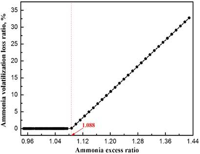
Fig. 9. Effect of ammonia excess ratio on ammonia volatilization loss with a CO2
excess ratio of 1.024.
a high enhanced carbonation conversion with a fast reaction rate and prevent ammonia volatilization loss. To obtain the highest enhanced carbonation temperature and enhanced carbonation conversion, the optimal ammonia excess ratio for the pressured phosphogypsum carbonation process is set to 1.05.
3.5. Influence of CO2 excess ratio
Similar to ammonia excess ratio, more than one mole of CO2 is needed for every one mole of gypsum that is completely converted into calcium carbonate. However, including more CO2 in the enhanced carbonation process will form more ammonium (bi) carbonates under increased CO2 pressure conditions, thereby decreasing the enhanced carbonation conversion and decelerating the enhanced carbonation rate. The effect of CO2 excess ratio on the pressured phosphogypsum carbonation process is evaluated by increasing the mass flow of initial inputted CO2 with the CO2 excess ratio from 0.92 to 1.10.
Fig. 10(a) shows that total carbonation conversion, ammonia utilization ratio, and ammonium sulfate concentration gradually increase when the CO2 excess ratio is below 1.0, and remain constant when the CO2 excess ratio is increased to 1.10. The enhanced carbonation conversion and pre-carbonation conversion
initially increase gradually. When the CO2 excess ratio is 0.995, the enhanced carbonation conversion reaches its highest value of 97.4%, while the pre-carbonation conversion reaches its lowest value of 1.5%. However, when the CO2 excess ratio is increased to 1.093, the enhanced carbonation conversion significantly decreases to its lowest value of 0, while the pre-carbonation conversion significantly increases to its highest value of 99.9%. Therefore, when the CO2 excess ratio is below the theoretical value of 1.0, most of the phosphogypsums are carbonated in the enhanced carbonation section, while most of the phosphogypsums are completely carbonated only in the pre-carbonation section when the CO2 excess ratio is not below 1.093. This result suggests that when the CO2 excess ratio is below 1.0, except for dissolved CO2, the rst inputted CO2 is mostly converted into calcium
fi
carbonate and a small amount of ammonium (bi)carbonate is formed in the enhanced carbonation section. The amount of formed ammonium (bi)carbonate increases when the CO2 excess ratio exceeds 1.0. Accordingly, the pre-carbonation conversion
increases and the enhanced carbonation conversion decreases along with increasing CO2 excess ratio.
Fig. 10(b) shows that the enhanced carbonation temperature increases when the CO2 excess ratio is increased to 1.01. Following a slight decrease, the enhanced carbonation temperature rapidly increases to its highest value at a CO2 excess ratio of 1.024, while rapidly decreases to a lower value when the ratio exceeds 1.039, and then decreases to its lowest value with a further increase in the ratio. It indicates that a CO2 excess ratio higher than 1.01 decreases the enhanced carbonation conversion, increases the pre-carbonation conversion along with CO2 excess ratio, and sharply increases the enhanced carbonation temperature to its highest value at a CO2 excess ratio of 1.024. These findings may be attributed to that the reaction of excess CO2 with ammonia will form ammonium (bi) carbonate and release more reaction heat to increase the enhanced carbonation temperature. However, the ammonium (bi)carbonate is recycled in the pre-carbonation section after the flash and absorption sections. This process leads to the carbonation of more phosphogypsums in the pre-carbonation section and the recovery of more reaction heat by the heat exchanger, thereby reducing the enhanced carbonation temperature. That is also confirmed by the previous studies, which show that the enhanced carbonation temperature sharply changes with enhanced carbonation pressure and flash pressure. Given that some small excess CO2 and ammonia are dissolved in the aqueous solution under increased CO2 pressure conditions, and the Henry coefficient for CO2 is much lower than ammonia, the CO2 excess ratio for the sharp change in enhanced carbonation temperature is lower than the ammonia excess ratio of 1.05. A CO2 excess ratio of 1.024 results in the highest enhanced carbonation temperature, and increases the enhanced carbonation conversion much higher than the pre-carbonation conversion.
Therefore, the optimal CO2 excess ratio for the pressured phosphogypsum carbonation process is set to 1.024.
3.6. Influence of mass ratio of water to phosphogypsum
Water is usually employed for CO2 mineral carbonation with increasing reaction rate [13,6]. In enhanced phosphogypsum
carbonation, water is used as a solvent for dissolving the ammonia, producing the ammonium sulfate, and dissociating phosphogypsum with a fast carbonation reaction rate. Using more water in the process will decrease the obtained ammonium sulfate concentration. Accordingly, more water needs to be evaporated in the production of ammonium sulfate fertilizer, thereby leading to high energy consumption. The effect of mass ratio of water to phosphogypsum on this pressured phosphogypsum carbonation process is evaluated by increasing the mass flow of initial inputted water with the mass ratio of water to phosphogypsum from 0.75 to 1.82.
|
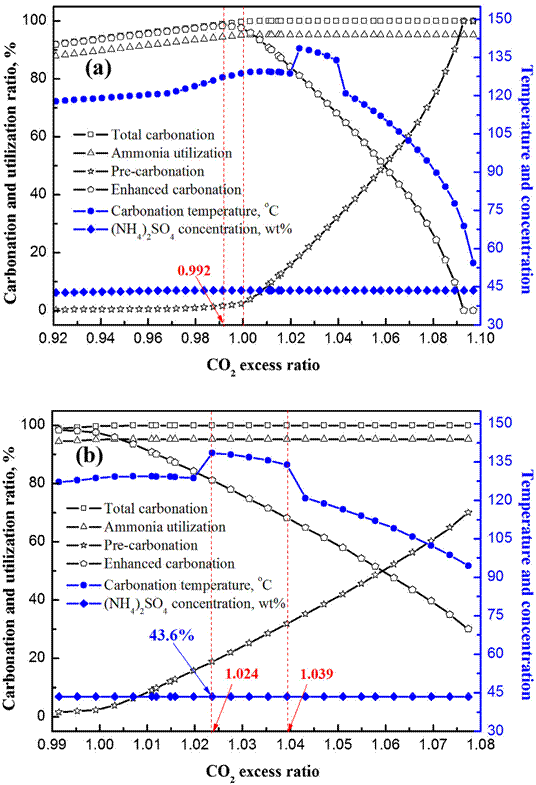
Fig.
10. Effect of
CO2 excess ratio
on the
pressured phosphogypsum
carbonation process
with an
ammonia excess
ratio of
1.05: (a)
full view,
(b) magni
ed view. fi
|
Fig. 11 shows that the total carbonation conversion and ammonia utilization ratio remain constant when the ammonium sulfate concentration significantly decreases along with increasing mass ratio of water to phosphogypsum. The enhanced carbonation conversion significantly increases with the mass ratio of water to phosphogypsum below 0.8, and then gradually increases when the mass ratio exceeds 0.8. The pre-carbonation conversion shows the opposite trend, and it is still much lower than the enhanced carbonation conversion. The increase in enhanced carbonation conversion and decrease in pre-carbonation conversion might be attributed to the reduction of ammonium (bi)carbonate in the enhanced carbonation section as a result of increasing mass ratio of water to phosphogypsum, and the ammonium (bi)carbonate significantly decreases when the mass ratio is below 0.8. Therefore, a low mass ratio of water to phosphogypsum can help obtain a high ammonium sulfate concentration, and a mass ratio of above 0.8 can increase the enhanced carbonation conversion and decrease the pre-carbonation conversion, but the latter is significant in this pressured phosphogypsum carbonation process. Moreover, it can be also seen that the enhanced carbonation temperature remains
constant with increasing mass ratio, while rapidly increases to its highest value at a mass ratio of 0.94, and then gradually decreases with increasing mass ratio. At a mass ratio of 0.94, the enhanced carbonation conversion is much higher than the pre-carbonation conversion, while the enhanced carbonation temperature reaches its highest value to ensure a fast carbonation reaction rate. Therefore, the optimal mass ratio of water to phosphogypsum for the pressured phosphogypsum carbonation process is set to 0.94. The obtained ammonium sulfate concentration is 43.6 wt%, which is similar to that obtained from the above simulation under optimal conditions.
4. Conclusions
A novel process of the mineral carbonation of phosphogypsum with ammonia under increased CO2 pressure was simulated using the Aspen Plus process simulation software. The sensitivity of many operation conditions were analyzed, and the optimal conditions were identified. The enhanced carbonation section plays the key role in the pressured phosphogypsum carbonation process, and phosphogypsum can be completely converted into calcium carbonate after this section. The enhanced carbonation conversion slightly changes and is about four times higher than the pre-carbonation conversion with increasing enhanced carbonation and flash pressures, and at an ammonia absorption solution temperature of below 46 C, the ammonia excess ratio exceeds 1.088, the CO2 excess ratio is below 1.0, and the mass ratio of water to phosphogypsum exceeds 0.8. The reaction of excess CO2 with ammonia to form ammonium (bi)carbonate has great influence on the enhanced carbonation temperature. The optimal conditions for the pressured carbonation process are as follows: 6 bar enhanced carbonation pressure, 1 bar flash pressure, 38 C ammonia absorption solution temperature, 1.05 ammonia excess ratio, 1.024 CO2
|
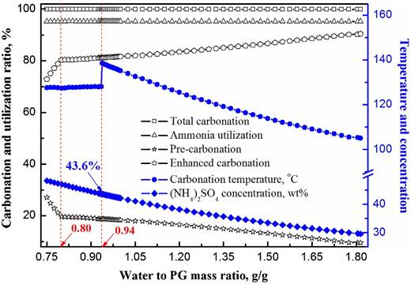
Fig.
11. Effect of
mass ratio
of water
to phosphogypsum
on the
pressured phosphogypsum
carbonation process
with ammonia
and CO2 excess
ratios of
1.05 and
1.024,
|
respectively.
excess ratio, and 0.94 mass ratio of water to phosphogypsum. These conditions yield the total carbonation conversion, ammonia
utilization ratio, ammonium sulfate concentration of 99.9%, 95.2%, 43.6 wt% respectively, and the highest enhanced carbonation temperature of 138.5 C, thereby achieving the fastest carbonation reaction rate.
Acknowlegments
The authors are grateful for the financial support of the National Natural Science Foundation of China (No.21300212), and the 12th Five-Year Plan of National Science and Technology Support (No.2013BAC12B02).
References
[1] C. Arenas, L. Ricaurte, M. Figueredo, M. Cobo, CO2 capture via barium carbonate formation after its absorption with ammonia in a pilot scale column, Chem. Eng. J. 254 (2014) 220�C229.
[2] A. Azdarpour, M. Asadullah, R. Junin, M. Manan, H. Hamidi, E. Mohammadian, Direct carbonation of red gypsum to produce solid carbonates, Fuel Process. Technol. 126 (2014) 429�C434.
[3] A. Azdarpour, M. Asadullah, E. Mohammadian, R. Junin, H. Hamidi, M. Manan, A.R.M. Daud, Mineral carbonation of red gypsum via pH-swing process: effect of CO2 pressure on the efficiency and products characteristics, Chem. Eng. J. 264 (2015) 425�C436.
[4] A. Azdarpour, M. Asadullah, R. Junin, E. Mohammadian, H. Hamidi, A.R.M. Daud, M. Manan, Extraction of calcium from red gypsum for calcium carbonate production, Fuel Process. Technol. 130 (2015) 12�C19.
[5] E.R. Bobicki, Q.X. Liu, Z.H. Xu, H.B. Zeng, Carbon capture and storage using alkaline industrial wastes, Prog. Energy Combust. 38 (2012) 302�C320.
[6] B. Bonfils, C. Julcour-Lebigue, F. Guyot, F. Bodénand, P. Chiquet, F. Bourgeois, Comprehensive analysis of direct aqueous mineral carbonation using dissolution enhancing organic additives, Int. J. Greenh. Gas Control 9 (2012) 334�C346.
[7] C. Cárdenas-Escudero, V. Morales-Flórez, R. Pérez-López, A. Santos, L. Esquivias, Procedure to use phosphogypsum industrial waste for mineral CO2 sequestration, J. Hazard. Mater. 196 (2011) 431�C435.
[8] M. Contreras, R. Pérez-López, M.J. Gázquez, V. Morales-Flórez, A. Santos, L. Esquivias, J.P. Bolívar, Fractionation and fluxes of metals and radionuclides during the recycling process of phosphogypsum wastes applied to mineral CO2 sequestration, Waste Manage. 45 (6) (2015) 412�C419, doi:http://dx.doi. org/10.1016/j.wasman.2015.06.046.
[9] W.J. Ding, H.M. Yang, J. Ouyang, Mineral carbonation of a desulfurization residue for CO2 sequestration, RSC Adv. 5 (2015) 67184�C67194.
[10] S. Eloneva, S. Teir, J. Salminen, C.-J. Fogelholm, R. Zevenhoven, Steel converter slag as a raw material for precipitation of pure calcium carbonate, Ind. Eng.
Chem. Res. 47 (2008) 7104�C7011.
[11] U. Göppert, G. Maurer, Vapor-liquid equilibria in aqueous solutions of ammonia and carbon dioxide at temperatures between 333 and 393öK and pressures up to 7öMPa, Fluid Phase Equilib. 41 (1988) 153�C185.
[12] W.J.J. Huijgen, R.N.J. Comans, Carbon Dioxide Sequestration by Mineral Carbonation: Literature Review Update 2003�C2004, ECN School Fossiel, Netherlands, 2005.
[13] S.C.M. Krevor, K.S. Lackner, Enhancing serpentine dissolution kinetics for mineral carbon dioxide sequestration, Int. J. Greenh. Gas Control 5 (2011) 1073�C1080.
[14] F. Kurz, B. Rumpf, G. Maurer, Vapor-iquid-solid equilibria in the system NH3CO2-H2O from around 310�C470 K: new experimental data and modeling, Fluid Phase Equilib. 104 (1995) 261�C275.
[15] K.S. Lackner, Carbonate chemistry for sequestering fossil carbon, Annu. Rev.
Energy Environ. 27 (2002) 193�C232.
[16] K.S. Lackner, A guide to CO2 sequestration, Science 300 (2003) 1677�C1678.
[17] M.G. Lee, Y.N. Jang, K.W. Ryu, W. Kim, J.-H. Bang, Mineral carbonation of flue gas desulfurization gypsum for CO2 sequestration, Energy 4 (1) (2012) 370�C 377.
[18] P.M. Mathias, S. Reddy, J.P. O’Connell, Quantitative evaluation of the chilledammonia process for CO2 capture using thermodynamic analysis and process simulation, Int. J. Greenh. Gas Control 4 (2010) 174�C179.
[19] H.P. Mattila, R. Zevenhoven, Mineral carbonation of phosphogypsum waste for production of useful carbonate and sulfate salts, Front. Energy Res. 3 (2015) 48, doi:http://dx.doi.org/10.3389/fenrg.2015.00048.
[20] M. Mikkelsen, M. Jørgensen, F.C. Krebs, The teraton challenge: a review of fixation and transformation of carbon dioxide, Energy Environ. Sci. 3 (2010) 43�C81.
[21] E.M. Mindrup, W.F. Schneider, Computational comparison of the reactions of substituted amines with CO2, ChemSusChem 3 (2010) 931�C938.
[22] A.A. Olajire, A review of mineral carbonation technology in sequestration of CO2, J. Pet. Sci. Eng. 109 (2013) 364�C392.
[23] R. Pérez-López, J.M. Nieto, I. López-Coto, J.L. Aguado, J.P. Bolívar, M. Santisteban, Dynamics of contaminants in phosphogypsum of the fertilizer industry of Huelva (SW Spain): from phosphate rock ore to the environment, Appl. Geochem. 25 (2010) 705�C715.
[24] S.M. Pérez-Moreno, M.J. Gázquez, J.P. Bolívar, CO2 sequestration by indirect carbonation of artificial gypsum generated in the manufacture of titanium dioxide pigments, Chem. Eng. J. 262 (2015) 737�C746.
[25] G.J. Qi, S.J. Wang, W.Y. Lu, J.W. Yu, C.H. Chen, Vapor-liquid equilibrium of CO2 in NH3-CO2-SO2-H2O system, Fluid Phase Equilib. 386 (2015) 47�C55.
[26] O. Rahmani, M. Tyrer, R. Junin, Calcite precipitation from by-product red gypsum in aqueous carbonation process, RSC Adv. 4 (2014) 45548�C45557.
[27] P.M. Rutherford, M.J. Dudas, R.A. Samek, Environmental impacts of phosphogypsum, Sci. Total Environ. 149 (1994) 1�C38.
[28] A. Sanna, M. Uibu, G. Caramanna, R. Kuusikand, M.M. Maroto-Valera, A review of mineral carbonation technologies to sequester CO2, Chem. Soc. Rev. 43 (2014) 8049�C8080.
[29] F. Shakerian, K.-H. Kim, J.E. Szulejko, J.-W. Park, A comparative review between amines and ammonia as sorptive media for post-combustion CO2 capture, Appl. Energ. 148 (2015) 10�C22.
[30] J. Sipilä, S. Teir, R. Zevenhoven, Carbon Dioxide Sequestration by Mineral Carbonation: Literature Review Update 2005�C2007, Faculty of technology heat engineering laboratory report, Åbo Akademi University, 2008.
[31] S. Solomon, D. Qin, M. Manning, Z. Chen, M. Marquis, K.B. Averyt, M. Tignor, H. L. Miller, Contribution of Working Group I to the Fourth Assessment Report of the Intergovernmental Panel on Climate Change, Cambridge University Press, Cambridge, United Kingdom and New York, NY, USA, 2007.
[32] K.S. Song, Y.N. Jang, W. Kim, M.G. Lee, D. Shin, J.H. Bang, C.W. Jeon, S.C. Chae, Precipitation of calcium carbonate during direct aqueous carbonation of flue gas desulfurization gypsum, Chem. Eng. J. 213 (2012) 251�C258.
[33] K.S. Song, Y.N. Jang, W. Kim, M.G. Lee, D. Shin, J.-H. Bang, C.W. Jeon, S.C. Chae, Factors affecting the precipitation of pure calcium carbonate during the direct aqueous carbonation of flue gas desulfurization, Energy 65 (2014) 527�C532.
[34] K.S. Song, W. Kim, J.-H. Bang, S. Park, C.W. Jeon, Polymorphs of pure calcium carbonate prepared by the mineral carbonation of flue gas desulfurization gypsum, Mater. Des. 83 (2015) 308�C313.
[35] The Royal Society & National Academy of Sciences, Climate Change: Evidence
and Causes, (2014) . https://royalsociety.org//media/Royal_Society_Content/ policy/projects/climate-evidence-causes/.
[36] C. Wang, H.R. Yue, C. Li, B. Liang, J.H. Zhu, H.P. Xie, Mineralization of CO2 using natural K feldspar and industrial solid waste to produce soluble potassium, Ind. Eng. Chem. Res. 53 (2014) 7971�C7978.
[37] W.L. Wang, D.W. Zeng, Q.Y. Chen, X. Yin, Experimental determination and modeling of gypsum and insoluble anhydrite solubility in the system CaSO4H2SO4-H2O, Chem. Eng. Sci. 101 (2013) 120�C129.
[38] H.P. Xie, H.R. Yue, J.H. Zhu, B. Liang, C. Li, Y.F. Wang, L.Z. Xie, X.G. Zhou, Scientific and engineering progress in CO2 mineralization using industrial waste and natural minerals, Engineering 1 (2015) 150�C157.
[39] R. Zevenhoven, S. Eloneva, S. Teir, Chemical fixation of CO2 in carbonates: routes to valuable products and long-term storage, Catal. Today 115 (2006) 73�C 79.
[40] H.T. Zhao, H.Q. Li, W.J. Bao, C.Y. Wang, S.G. Li, W.G. Lin, Spectral analysis of trace fluorine phase in phosphogypsum, Spectros. Spect. Anal. 35 (2015) 2333�C2338.
[41] H.T. Zhao, H.Q. Li, W.J. Bao, C.Y. Wang, S.G. Li, W.G. Lin, Experimental study of enhanced phosphogypsum carbonation with ammonia under increased CO2 pressure, J. CO2 Util. 11 (2015) 10�C19.
[42] Y. Zhang, H. Chen, C.C. Chen, J.M. Plaza, R. Dugas, G.T. Rochelle, Rate-based process modeling study of CO2 capture with aqueous monoethanolamine solution, Ind. Eng. Chem. Res. 48 (2009) 9233�C9246.